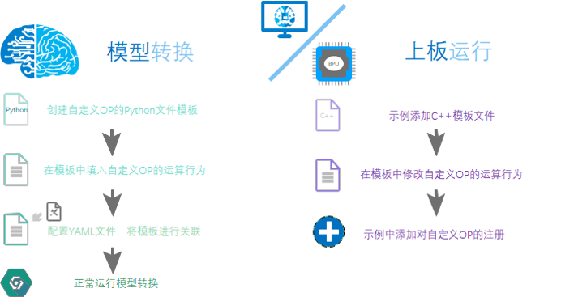

5. 自定义算子开发
5.1. 简介
地平线工具链中已经支持了丰富的算子，在大多数情况下，您的模型应该可以通过前文所述模型转换顺利部署到地平线芯片上。 少部分算子不支持情况下，我们建议您先尝试下替换算子的可能性，这样有利于将地平线芯片能力充分发挥出来。
自定义算子只提供CPU上算子开发能力，一个完整的自定义算子应用过程包括创建模板、算子实现、算子编译、 含自定义算子模型转换和运行含自定义op模型几个阶段。具体流程如下图所示:
如图所示，定义自定义OP需要有两部分的任务，在模型转换阶段，需要提供自定义OP的python代码，在模拟器/上板运行推理阶段， 需要提供自定义OP的C++代码，要确保这两部分的代码运算的一致性。
5.2. 含自定义算子的模型转换
5.2.1. 模型文件修改
在准备好自定义算子实现后，为了将算子应用起来，您需要从原始模型文件和模型转换配置两个方面做出相应调整
(下面分别以 Caffe 模型和 ONNX 模型为例)。
Caffe 模型
原始模型文件中，将自定义算子对应的算子类型标记为 Custom，并提供一组 custom_param，示例如下。
layer {
name: "hr_op"
type: "Custom"
bottom: "res3d_in"
top: "res3d"
custom_param {
kind: "CustomIdentity"
shape {
dim: 1
dim: 512
dim: 28
dim: 28
}
params: "'kernel_size': 10 \n'threshold': 0.5"
}
}
以上完整 custom_param 示例中。
kind 是自定义算子的内部实现名称，该自定义OP为恒等OP，因此命名为 CustomIdentity，该名称在后续Python及C++代码中均会体现；
shape 是算子的输出尺寸，需要完整指定；params 是算子的传入参数指定形式为 'param_name': param_value，
多个参数之间使用 \n 分隔。
在模型转换配置中，使用自定义算子需要在配置文件中加入一个新的自定义op参数组如下：
#...
custom_op:
# 自定义op的校准方式
custom_op_method: register
# 自定义OP的实现文件, 多个文件可用";"分隔
op_register_files: sample_custom.py
# 自定义OP实现文件所在的文件夹, 请使用相对路径
custom_op_dir: ./custom_op
对于 Caffe 模型，以上参数组中，三个参数都是必须配置的。custom_op_method 固定使用 register；
op_register_files 是自定义算子计算的实现文件，
如果有多份实现，使用 ‘;’ 将各个文件分开即可；custom_op_dir 是存放 op_register_files 系列文件的路径名称，请使用相对路径。
完成这些配置后，模型转换的后续步骤与其他一般模型转换过程一致。
ONNX 模型
含有自定义算子的Onnx模型的获取:
从pytorch 等其他框架转换而来
参考代码:
import torch from horizon_nn.horizon_onnx.onnx_pb import TensorProto from torch.onnx.symbolic_helper import parse_args from torch.onnx.utils import register_custom_op_symbolic from torch import Tensor model = torch.hub.load('pytorch/vision:v0.10.0', 'googlenet', pretrained=True) def _transform_input(x: Tensor) -> Tensor: return x model._transform_input = _transform_input @parse_args("v", "v") def horizon_pool(g, input, output_size): return g.op( 'horizon.custom::PyOp', #required, ! must be 'horizon.custom' domain ! input, class_name_s="GlobalAveragePool", #required ! must match the class def name in sample_custom python file ! compute_s="compute", #optional, 'compute' by default module_s="sample_custom", #required ! must match the file name of the "op_register_files" ! input_types_i=[TensorProto.FLOAT], #required output_types_i=[TensorProto.FLOAT], #required output_shape_s=["1, 1024, 1, 1"]) #required d_input = torch.rand(1, 3, 224, 224) register_custom_op_symbolic('::adaptive_avg_pool2d', horizon_pool, opset_version=11) torch.onnx.export(model, d_input, "googlenet_cop.onnx", opset_version=11)
直接修改onnx模型
参考代码：
from horizon_nn import horizon_onnx from horizon_nn.horizon_onnx import helper from horizon_nn.horizon_onnx.onnx_pb import TensorProto model = horizon_onnx.load("googlenet.onnx") # print(helper.printable_graph(model.graph)) py1_node = helper.make_node( op_type='PyOp', #required, must be 'PyOp' name='hr_op', #required inputs=['368'], #required outputs=['368_py'], #required domain='horizon.custom', #required, ! must be 'horizon.custom' domain ! input_types=[TensorProto.FLOAT], #required output_types=[TensorProto.FLOAT], #required module='sample_custom', #required, ! must match the file name of the "op_register_files" ! class_name='CustomIdentity', #required ! must match the class def name in sample_custom python file ! compute='compute', #optional, 'compute' by default kernel_size='10', #optional, threshold='1.2') #optional, custom_index = -1 for node_index in range(len(model.graph.node)): if model.graph.node[node_index].name == "Conv_4": # insert pyop at certain point in the original model model.graph.node[node_index].input[0] = "368_py" custom_index = node_index if custom_index == -1: raise ValueError(f"target node not found") model.graph.node.insert(custom_index, py1_node) pyop_value_info = helper.make_tensor_value_info("368_py", TensorProto.FLOAT, # value info is needed for onnx shape infer. [1, 64, 56, 56]) model.graph.value_info.append(pyop_value_info) pyop_opset = helper.make_operatorsetid("horizon.custom", 1) model.opset_import.append(pyop_opset) horizon_onnx.save(model, "modified.onnx")
注意
Onnx模型中PyOp属性的注意点:
domain 属性一定要设置, 不然的话会被默认成 onnx 标准domain 从而报错
module 需要与注册时使用的注册文件同名. 若注册文件在当前目录的子文件夹中, 则需要修改module内容. 例如: 若
sample_custom.py在当前路径的custom_op 文件夹中, 则该module应设置为custom_op.sample_customclass_name 需要与注册文件中的class名称相同
与
Caffe模型一致，需要在模型转换配置中，使用自定义算子需要在配置文件中加入一个新的自定义op参数组如下：
#...
custom_op:
# 自定义op的校准方式
custom_op_method: register
# 自定义OP的实现文件, 多个文件可用";"分隔
op_register_files: sample_custom.py
对于 ONNX 模型，以上参数组中的两个参数都是必须配置的。custom_op_method 固定使用 register；
op_register_files 是自定义算子计算的实现文件，如果有多份实现，使用 ‘;’ 将各个文件分开即可；
完成这些配置后，模型转换的后续步骤与其他一般模型转换过程一致。
5.2.2. 算子实现
在模型转换阶段, 需要提供自定义算子的Python实现, 工具会利用该实现函数完成模型的浮点转定点转换。
Python模板文件(sample_custom.py)如下:
#sample_custom.py
from horizon_nn.custom.op_registration import op_implement_register, op_shape_infer_register
@op_implement_register("CustomIdentity")
class CustomIdentity(object):
def __init__(self, kernel_size, threshold):
self._kernel_size = kernel_size
self._default_threshold = threshold
def compute(self, X):
return X
@op_shape_infer_register("CustomIdentity")
def infer_shape(inputs_shape):
"""Infer the output shapes of the custom operator.
Arguments:
input_shapes: A list of input shapes.
Returns:
Return a list of custom operator's output shapes.
"""
outputs_shape = inputs_shape
return outputs_shape
该文件的名字(sample_custom.py)需要填入模型转换的yaml配置文件中 op_register_files，否则工具无法正常import这个module，
并且修饰器 op_implement_register 注册的custom op名称 CustomIdentity 需要与自定义OP的类型（Kind）一致。
对于 Caffe 模型， init 函数中的参数(kernel_size, threshold)都是通过prototxt文件中的 params 传入的， 用于自定义op模块的初始化。如果在prototxt里已经说明op的形状， 则这里可以不用进行shape注册（op_shape_infer_register），
op_shape_infer_register 注册的函数只在prototxt中没有 shape 信息时才会被调用。
op_shape_infer_register 的输入参数为 inputs_shape, 自定义OP的输入数据的 shape （即上一个OP的输出 shape）。
上述操作完成后即可进行浮点转定点的操作, 得到相应的bin文件 （即 hb_mapper makertbin 命令 ）。
5.3. 含自定义算子的上板运行
在拿到bin文件后，还不能直接在开发板上运行。在运行之前需要先提供自定义算子的C++代码实现。 您可以使用下文提供的模板进行修改并添加到示例代码中进行使用。
如果您只是希望测试自定义算子的功能，也可以直接使用我们提供的模版文件，模版文件中将输入直接赋值为输出使用， 所以这个自定义算子并不会对结果造成任何影响。
5.3.1. 自定义算子C++模版
Runtime模板文件如下:
// custom_identity.h
#ifndef ADVANCED_SAMPLES_CUSTOM_IDENTITY_H_
#define ADVANCED_SAMPLES_CUSTOM_IDENTITY_H_
#include <string>
#include <vector>
#include "dnn/hb_dnn.h"
#include "dnn/plugin/hb_dnn_layer.h"
#include "dnn/plugin/hb_dnn_ndarray.h"
namespace hobot {
namespace dnn {
Layer *CustomIdentity_layer_creator();
class CustomIdentity : public Layer {
public:
CustomIdentity() = default;
~CustomIdentity() override = default;
public:
int32_t Init(const Attribute &attributes) override;
int32_t Forward(const std::vector<NDArray *> &bottomBlobs,
std::vector<NDArray *> &topBlobs,
const hbDNNInferCtrlParam *inferCtrlParam) override;
std::string GetType() const override { return "CustomIdentity"; }
private:
std::string module_;
};
} // namespace dnn
} // namespace hobot
#endif
// custom_identity.cpp
#include "custom_identity.h"
namespace hobot {
namespace dnn {
Layer *CustomIdentity_layer_creator() { return new CustomIdentity; }
int32_t CustomIdentity::Init(const Attribute &attributes) {
// unused attribute, just demonstrating
attributes.GetAttributeValue(&module_, "module");
return 0;
}
int32_t CustomIdentity::Forward(const std::vector<NDArray *> &bottomBlobs,
std::vector<NDArray *> &topBlobs,
const hbDNNInferCtrlParam *inferCtrlParam) {
const NDArray *input = bottomBlobs[0];
NDArray *out = topBlobs[0];
const auto *input_data = input->Dptr<float>();
auto *out_data = out->Dptr<float>();
uint32_t size = input->Size();
for (uint32_t i = 0U; i < size; i++) {
out_data[i] = input_data[i];
}
return 0;
}
} // namespace dnn
} // namespace hobot
注解
该函数名称的前缀(即 CustomIdentity) 需要与自定义OP的类型（Kind）一致, 其传入的参数为:
bottom_blobs→ 自定义OP节点输入数据。top_blobs→ 自定义OP节点输出数据。inferCtrlParam→ 自定义算子初始化阶段的输入参数。
注意
模板中的运算规则均为输出等于输入, 因此后续用户若要定义其他行为, 则需相应的更改运算规则即可。
5.3.2. 自定义算子注册
当您完成C++版本模版的修改后，仅需要在示例的CMakeLists.txt中添加对模版文件的包含， 并在示例中增加对算子的注册即可，注册请参考以下代码：
#include "custom_identity.h"
hbDNNRegisterLayerCreator("CustomIdentity",
hobot::dnn::CustomIdentity_layer_creator);
....
当您完成对模版文件的依赖及算子注册后，即可对含有自定义算子的模型进行执行等操作。
注意
在使用前，请您确认模型的自定义算子名称与注册的算子名称是相同的。
参考文档，请参阅 Runtime 示例中的 advanced_samples 。